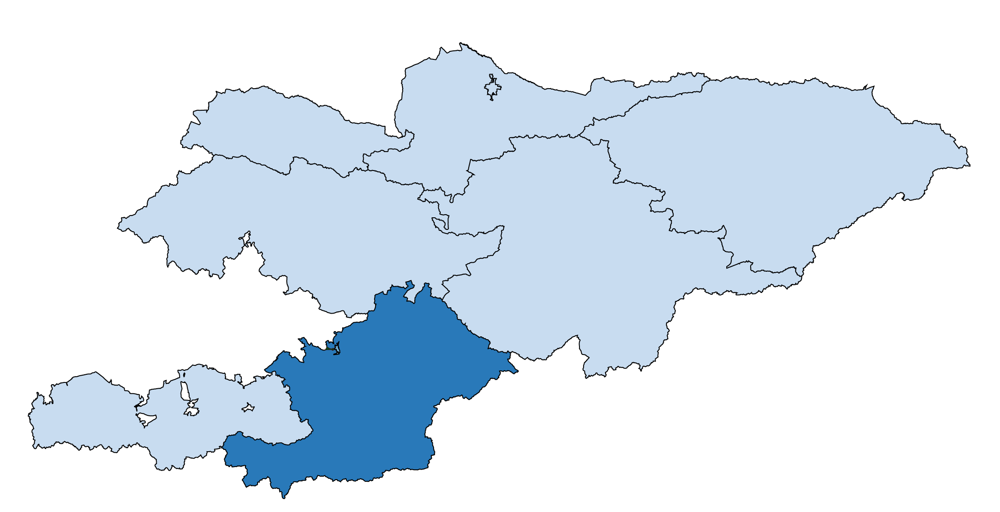

ОШ
Ошская область находится в южной части республики и граничит на западе с Баткенской областью,
на севере – с Джалал-Абадской областью, на северо-востоке – с Нарынской областью, на востоке – с
Китайской Народной Республикой, на юге – с Республикой Таджикистан, на северо-западе – с Республикой Узбекистан.
Общая площадь области составляет 29,0 тыс. кв. км, или 14,5 процента территории Кыргызской Республики.
Областной центр – город Ош – один из древнейших среднеазиатских городов.
В состав области входят 7 районов, 3 города районного значения (Кара-Суу, Ноокат, Узген) и 88 айылных аймаков.

Аксыйский район – г. Кербен (центр района)
Алайский район – с. Гульча (центр района)
Араванский район – с. Араван (центр района)
Кара-Кульджинский район – с. Кара-Кульджа (центр района)
Чон-Алайский район – с. Дароот-Коргон (центр района)
Кара-Сууский район – г.Кара-Суу (центр района)
Ноокатский район – г.Ноокат (центр района)
Узгенский район – г.Узген (центр района)